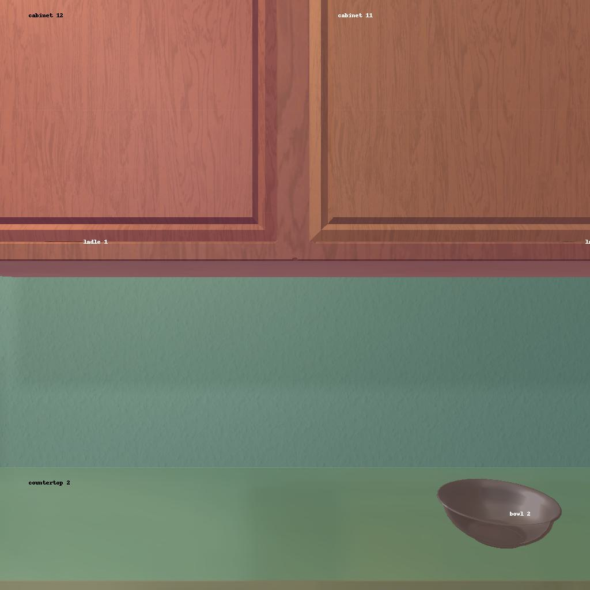

---------------------------------------------------------task: 22---------------------------------------------------------
--------------------------------------------------------------------------------------------------------------------------------------------------------------------
--------------------------------------------------------------------------------------------------------------------------------------------------------------------
Step:--------------------------------------------------------------------------16-------------------------------------------------------------------------------
----------------------------------------
VLM Prompt:
Image1:
Image2:
Image3:
**Instruction**
1. Analyze the provided image to identify all visible household objects, focusing on those relevant to the task description "heat some egg and put it in countertop."
2. Use the analysis of the image and the task hint "The agent must find an object of the desired type, pick it up, go to a microwave, heat the object with the microwave, then find the correct location to place it, and put it down there. The agent does not need to use the microwave button or open the microwave to heat the object, and the agent just needs to do action that is "heat the object with the microwave"." to answer the question: what is the most reasonable action in the choices for the task description "heat some egg and put it in countertop"?
4. Decide and write the answer using the template: The answer is: (i): , where i is the real number. If there is no desired object in the image, search every place based on **Initial Observation** to find the object. And if no one is exactly correct, choose a similar answer.
**Initial Observation**
You are in the middle of a room. Looking quickly around you, you can see cabinet (1-18), countertop (1-4), sink (1), drawer (1-7), sinkbasin (1), coffeemachine (1), microwave (1), garbagecan (1), stoveburner (1-4), toaster (1), fridge (1)
**Answer Choices**
(1): go to cabinet 1
(2): go to cabinet 2
(3): go to countertop 1
(4): go to cabinet 3
(5): go to cabinet 4
(6): go to cabinet 5
(7): go to sink 1
(8): go to cabinet 6
(9): go to drawer 1
(10): go to drawer 2
(11): go to cabinet 7
(12): go to cabinet 8
(13): go to coffeemachine 1
(14): go to cabinet 9
(15): go to cabinet 10
(16): go to drawer 3
(17): go to drawer 4
(18): go to garbagecan 1
(19): go to drawer 5
(20): go to cabinet 11
(21): go to cabinet 12
(22): go to cabinet 13
(23): go to cabinet 14
(24): go to stoveburner 1
(25): go to countertop 3
(26): go to stoveburner 2
(27): go to stoveburner 3
(28): go to stoveburner 4
(29): go to drawer 6
(30): go to cabinet 15
(31): go to cabinet 16
(32): go to cabinet 17
(33): go to cabinet 18
(34): go to toaster 1
(35): go to drawer 7
(36): go to countertop 4
(37): go to fridge 1
(38): take pan 1 from sinkbasin 1
(39): take cup 1 from sinkbasin 1
(40): take peppershaker 1 from sinkbasin 1
(41): take faucet 1 from sinkbasin 1
(42): take spoon 1 from sinkbasin 1
(43): take egg 1 from sinkbasin 1
(44): take kettle 1 from sinkbasin 1
(45): examine sinkbasin 1
**Answer**
Let's think step by step by following the instructions.
----------------------------------------
----------------------------------------
Original Response:
The task is to "heat some egg and put it in countertop." From Image 3, we can see that there is an "egg 1" in the sinkbasin 1. Since the agent does not need to use the microwave button or open the microwave to heat the object, the agent only needs to pick up the egg and perform the action of heating it with the microwave. After heating the egg, the agent is supposed to put it on the countertop.
Based on the **Initial Observation**, the agent is in the middle of the room with access to various cabinets, countertops, appliances, and other household objects. The task does not specify which countertop to place the heated egg on, so any countertop would technically satisfy the task description. However, since the task mentions "heat some egg and put it in countertop" without specifying, we can assume it means any available countertop.
Therefore, the most reasonable action from the choices given would be:
(43): take egg 1 from sinkbasin 1
Then, the agent would need to heat the egg with the microwave and place it on a countertop, but the specific actions for heating and placing the egg are not listed in the answer choices. The next reasonable action after picking up the egg would be to go to the microwave, but since that option is not given, we stick with the action of taking the egg.
The answer is: (43): take egg 1 from sinkbasin 1.
----------------------------------------
----------------------------------------
>>> Refine Original VLM Response and Get Pure Action: take egg 1 from sinkbasin 1
----------------------------------------
-----------------------------------------------------------------
Running time: 26.8608820438385 seconds
Total Money: 14.382470000000007
-----------------------------------------------------------------
-----------------------------------------------------------------
Text Observation:You pick up the egg 1 from the sinkbasin 1.
-----------------------------------------------------------------
UNSUCCEED